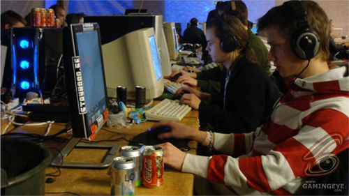

Locust: “I can’t think of any player I ABSOLUTELY can’t stand.”
After recent successes at Dreamhack and QHLAN, this dm4 elitist was just a must have in our interview seat. Read on to find out more about this player, his thoughts on QHLAN, NQR and QuakeWorld.
Hello Niclas Widewing, more likely known as Locust to the general public. So what’s going on in your QW career, did you join NQR?
Yo! Currently my career is dead due to some computer problems, but as soon as I get the new one I hope I can get started again. Nope, didn’t join NQR.
I think that you are probably one of the ‘pure’ duel-players out there, dag, interceptor, griffin, etc. all play 4on4 when they are active. Is there any particular reason why you don’t play 4on4?
Well not really, I actually started playing QW and 4on4 with Infanatica (!!) in late 2000, but we were like div90 so I got bored of it pretty soon and started playing 1on1 instead and never really got into 4on4 again. But I feel it’s time to evolve and start playing some - perhaps after the summer
I think you are almost alone with having a circle and a red dot in the center as crosshair; Is that something you always used or did you pick it up recently?
Got pretty big reactions on the last QHLan with my UNIQUE crosshair. I have tested lots of crosshairs and I don’t think it’s that big of a difference really. Was looking around some forum some year ago and just picked this one and I’m pretty satisfied with it. It was somehow different from all the other crosshairs.
When did you start to play QuakeWorld, and what has been your longest break from it? (I know you had at least one since I started playing QW)
I think I started playing in late 2000 or something, can’t really remember. And I have had some breaks for 6 months or so playing Wc3Duel instead.
How was QHLan 11 for you? Did you have any giving discussions with psykopatrik? And have you attended any previous QW/QHLans ?
I didn’t have any expectations really so for me it was a great lan, and yes, unfortunately I had some discussion with famous psykopatrik (which by the way STALKED reppie and cried when he sat behind him :>>> ) Haven’t gone to any QHLan despite having played for almost 8 years, but I will definitely go the the next one if there will be one.

In my early quakedays I always used to spectate dag because he was so awesome. I think it was your brother playing and dag raped him pretty bad on dm4. Then he asked if his friend (you) could play and you owned dag, pretty funny. That was the first time I saw you duel I think. Are there more benefits of having a relative playing Quake than surprising dag?
Hehe, well it’s always fun to share your interest with someone else, especially your brother. And people might think we played a lot vs each other but we actually didn’t because we knew how the other one would react if he won. I also think it helped with getting better because we were always competing to try to beat better players.
You are pretty involved in the Swedish/Nordic duel scene, namedrop a few players that have been getting better lately and maybe will take more wins in the big tourneys than expected, who/whom will be the QW 2.0 of dueling?
Well of course mawe is looking promising and the the Russian guy doom is really hot at the moment.
Dunno really, I haven’t been that involved recently. Theres a danish (?) guy Arnette who’s really good as well.
Do you have any comments about und’s death? Did you know who it was?
I’ve seen und a lot on different servers but never really spoke with him. I think its really tragic and my condolences go out to his family and friends.
How do you make a living, crosshair designer for a computer game firm?
:)) Haven’t thought of that, maybe I’ll give it a shot hehe… I’m an industrial operator for Stoneridge electronics. Building and testing different instruments for Mercedes, Scania and Volvo trucks, not cars.
There’s maybe going to be a QW tourney again in skellefteå dh (mini version of dh, only 1000 seats), would you like to go there and take your revenge?
Yea I noticed and I have no clue if I am going or not. I think it’s way too far, but who knows… maybe! But if there is a QW tourney in DH in the summer I’ll go for sure.
What do you think will be the next accepted/banned feature for QuakeWorld? Recently straight shaft was allowed and kfjump banned. Radar, team overlay, airstep, aimbot ? Make your pick!
Radar? Airstep? :D I have no clue what those are, but they sound kinda odd. I don’t mind kfjump but I personally don’t use it. Straight shaft is no big deal in my opinion ’cause it’s only an illusion of where your shaft is. But I guess if that works for some people, then fine by me :P
So a bit more of a drama question: Is there any player you absolutely can’t stand?
Hmmmm *long pause*, I think I had more of a grudge against people when I was younger, but at the moment I can’t think of any player I ABSOLUTELY can’t stand. Could be people are acting much more mature including me who was a whine-machine in my early days.
Take your average duel, what’s going on in your mind. Do you always take it 110% seriously or does it depend on mood and opponent and the stars alignment?
There’s not much going on in my mind during the duels. I’m just trying to get the upper hand all the time no matter what. Of course you play more or less serious depending who you play/skill etc. I’d say I always try to focus 110% vs the “stars” in order to get better.
Thanks for your time and good luck until next time.
Okeey thanks. Now I’ll go hump my gf! cya on ze zervers
Nice interview ruskie!
Btw, Arnette is from Norway :)